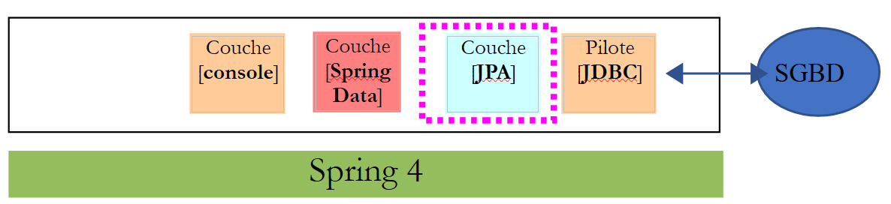
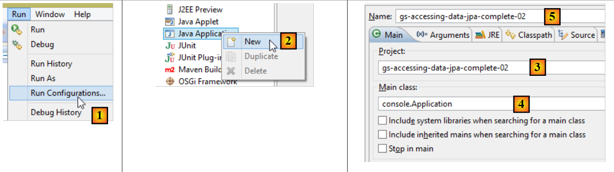
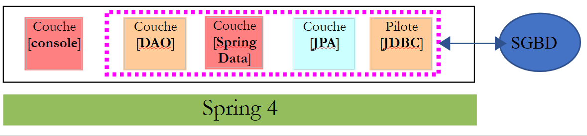
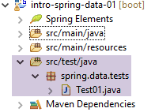
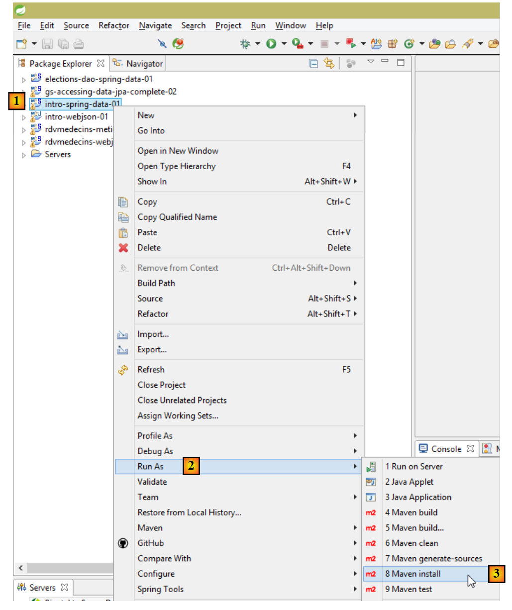

11. [Cours]: Beheer van relationele databases met Spring Data
Trefwoorden: meerlaagse architectuur, Spring, afhankelijkheidsinjectie, API JPA (Java Persistence API), Spring Data.
We gaan de laag [DAO] van het TD implementeren met [Spring Data], een onderdeel van het Spring-ecosysteem. [Spring Data] is gebaseerd op een JPA-laag (Java Persistence API), waardoor de laag [DAO] objecten kan verwerken in plaats van SQL-opdrachten. Uiteindelijk weet de laag [DAO] niet dat ze met een database communiceert. Ze kent alleen de interface van de laag [Spring Data].
 |
We gaan [Spring Data] eerst aan de hand van twee voorbeelden bekijken.
11.1. Support
 |
- in [1] bevat de map [support / chap-11] drie Eclipse-projecten;
- in [2] bevat het script SQL waarmee de voorbeelddatabase van dit hoofdstuk kan worden aangemaakt;
11.2. Voorbeeld 1
Op de website van Spring zijn talrijke tutorials te vinden om aan de slag te gaan met Spring [http://spring.io/guides]. We gaan er een gebruiken om Spring Data te introduceren. Hiervoor gebruiken we de Spring Tool Suite (STS).
 |
- in [1] importeren we een van de tutorials uit [spring.io/guides];
 |
- in [2] kiezen we de tutorial [Accessing Data Jpa], die laat zien hoe je met Spring Data toegang krijgt tot een database;
- in [3] kiest men een door Maven geconfigureerd project;
- in [4] kan de tutorial in twee vormen worden geleverd: [initial], een lege versie die je vult terwijl je de tutorial volgt, of [complete], de definitieve versie van de tutorial. We kiezen voor deze laatste;
- in [5] kun je ervoor kiezen om de tutorial in een browser te bekijken;
- in [6], het uiteindelijke project.
11.2.1. De Maven-configuratie van het project
De Maven-afhankelijkheden van het project worden geconfigureerd in het bestand [pom.xml]:
<groupId>org.springframework</groupId>
<artifactId>gs-accessing-data-jpa</artifactId>
<version>0.1.0</version>
<parent>
<groupId>org.springframework.boot</groupId>
<artifactId>spring-boot-starter-parent</artifactId>
<version>1.1.10.RELEASE</version>
</parent>
<dependencies>
<dependency>
<groupId>org.springframework.boot</groupId>
<artifactId>spring-boot-starter-data-jpa</artifactId>
</dependency>
<dependency>
<groupId>com.h2database</groupId>
<artifactId>h2</artifactId>
</dependency>
</dependencies>
<properties>
<!-- gebruik UTF-8 voor alles -->
<project.build.sourceEncoding>UTF-8</project.build.sourceEncoding>
<project.reporting.outputEncoding>UTF-8</project.reporting.outputEncoding>
<start-class>hello.Application</start-class>
</properties>
- regels 5-9: definiëren een bovenliggend Maven-project. Dit project bepaalt het grootste deel van de afhankelijkheden van het project. Deze kunnen voldoende zijn, in welk geval er niets wordt toegevoegd, of onvoldoende, in welk geval de ontbrekende afhankelijkheden worden toegevoegd;
- regels 12-15: definiëren een afhankelijkheid van [spring-boot-starter-data-jpa]. Dit artefact bevat de klassen van Spring Data;
- regels 16-19: definiëren een afhankelijkheid van SGBD en H2, waarmee in-memory-databases kunnen worden aangemaakt en beheerd.
Laten we eens kijken naar de klassen die door deze afhankelijkheden worden geleverd:
 |  |  |
Het zijn er heel veel:
- sommige behoren tot het Spring-ecosysteem (die welke beginnen met spring);
- andere behoren tot het Hibernate-ecosysteem (hibernate, jboss), waarvan we hier de implementatie JPA gebruiken;
- weer andere zijn testbibliotheken (junit, hamcrest);
- weer andere zijn logboekbibliotheken (log4j, logback, slf4j);
We zullen ze allemaal behouden. Voor een applicatie in productie zouden we alleen die moeten behouden die noodzakelijk zijn.
Op regel 26 van het bestand [pom.xml] staat de volgende regel:
<start-class>hello.Application</start-class>
Deze regel is gekoppeld aan de volgende regels:
<build>
<plugins>
<plugin>
<artifactId>maven-compiler-plugin</artifactId>
</plugin>
<plugin>
<groupId>org.springframework.boot</groupId>
<artifactId>spring-boot-maven-plugin</artifactId>
</plugin>
</plugins>
</build>
Regels 6-9: met de plug-in [spring-boot-maven-plugin] kan het uitvoerbare JAR-bestand van de applicatie worden gegenereerd. Regel 26 van het bestand [pom.xml] verwijst dan naar de uitvoerbare klasse van dit JAR-bestand.
11.2.2. De laag [JPA]
Toegang tot de database verloopt via een laag [JPA], Java Persistence API:
 |
 |
De applicatie is eenvoudig en beheert klanten [Customer]. De klasse [Customer] maakt deel uit van de laag [JPA] en ziet er als volgt uit:
package hello;
import javax.persistence.Entity;
import javax.persistence.GeneratedValue;
import javax.persistence.GenerationType;
import javax.persistence.Id;
@Entity
public class Customer {
@Id
@GeneratedValue(strategy = GenerationType.AUTO)
private long id;
private String firstName;
private String lastName;
protected Customer() {
}
public Customer(String firstName, String lastName) {
this.firstName = firstName;
this.lastName = lastName;
}
@Override
public String toString() {
return String.format("Customer[id=%d, firstName='%s', lastName='%s']", id, firstName, lastName);
}
}
Een klant heeft een ID [id], een voornaam [firstName] en een achternaam [lastName]. Elk exemplaar [Customer] vertegenwoordigt een rij in een databasetabel.
- regel 8: annotatie JPA, waardoor de persistentie van de instanties [Customer] (Create, Read, Update, Delete) wordt beheerd door een implementatie JPA. Uit de Maven-afhankelijkheden blijkt dat de implementatie JPA / Hibernate wordt gebruikt;
- regels 11-12: annotaties JPA die het veld [id] koppelen aan de primaire sleutel van de tabel [Customer]. Regel 12 geeft aan dat de implementatie JPA de methode voor het genereren van de primaire sleutel zal gebruiken die eigen is aan de gebruikte SGBD, in dit geval H2;
Er zijn geen andere annotaties voor JPA. Er worden dan standaardwaarden gebruikt:
- de tabel van [Customer] krijgt de naam van de klasse, d.w.z. [Customer];
- de kolommen van deze tabel krijgen de naam van de velden van de klasse: [id, firstName, lastName], waarbij hoofdletters en kleine letters in de naam van een tabelkolom niet van belang zijn;
Opgemerkt moet worden dat de gebruikte implementatie JPA op geen enkel moment bij naam wordt genoemd.
11.2.3. De laag [Spring Data]
De klasse [CustomerRepository] implementeert de toegangslaag voor de tabel [Customer]. De code ervan is als volgt:
 |
 |
package hello;
import java.util.List;
import org.springframework.data.repository.CrudRepository;
public interface CustomerRepository extends CrudRepository<Customer, Long> {
List<Customer> findByLastName(String lastName);
}
Het gaat dus om een interface en niet om een klasse (regel 7). Deze interface is een uitbreiding van de interface [CrudRepository], een interface van Spring Data (regel 5). Deze interface wordt gedefinieerd door twee typen: het eerste is het type van de beheerde elementen, in dit geval het type [Customer], het tweede is het type van de primaire sleutel van de beheerde elementen, in dit geval het type [Long]. De interface [CrudRepository] ziet er als volgt uit:
package org.springframework.data.repository;
import java.io.Serializable;
@NoRepositoryBean
public interface CrudRepository<T, ID extends Serializable> extends Repository<T, ID> {
<S extends T> S save(S entity);
<S extends T> Iterable<S> save(Iterable<S> entities);
T findOne(ID id);
boolean exists(ID id);
Iterable<T> findAll();
Iterable<T> findAll(Iterable<ID> ids);
long count();
void delete(ID id);
void delete(T entity);
void delete(Iterable<? extends T> entities);
void deleteAll();
}
Deze interface definieert de bewerkingen CRUD (Create – Read – Update – Delete) die kunnen worden uitgevoerd op een type JPA T:
- regel 8: met de methode `save` kan een entiteit van type T in de database worden opgeslagen. Hiermee wordt de entiteit opgeslagen met de primaire sleutel die door SGBD is toegekend. Deze methode maakt het ook mogelijk om een entiteit van type T bij te werken die wordt geïdentificeerd door de primaire sleutel id. De keuze voor de ene of de andere actie hangt af van de waarde van de primaire sleutel id: als deze null is, vindt de opslagbewerking plaats, anders de bijwerkingsbewerking;
- regel 10: idem, maar dan voor een lijst met entiteiten;
- regel 12: met de methode findOne kan een entiteit T worden opgehaald die wordt geïdentificeerd door de primaire sleutel id;
- regel 22: met de methode `delete` kan een entiteit T worden verwijderd die wordt geïdentificeerd door zijn primaire sleutel `id`;
- regels 24-28: varianten van de methode [delete];
- regel 16: met de methode [findAll] kunnen alle opgeslagen entiteiten T worden opgehaald;
- regel 18: idem, maar beperkt tot de entiteiten waarvan de lijst met identificatiecodes is doorgegeven;
Laten we teruggaan naar de interface [CustomerRepository]:
package hello;
import java.util.List;
import org.springframework.data.repository.CrudRepository;
public interface CustomerRepository extends CrudRepository<Customer, Long> {
List<Customer> findByLastName(String lastName);
}
- met regel 9 kan een [Customer] worden opgezocht op basis van de naam [lastName];
En dat is alles voor de laag [DAO]. Er is geen implementatieklasse voor de vorige interface. Deze wordt tijdens de uitvoering gegenereerd door [Spring Data]. De methoden van de interface [CrudRepository] worden automatisch geïmplementeerd. Voor de methoden die aan de interface [CustomerRepository] zijn toegevoegd, hangt het ervan af. Laten we teruggaan naar de definitie van [Customer]:
private long id;
private String firstName;
private String lastName;
De methode op regel 9 wordt automatisch geïmplementeerd door [Spring Data], omdat deze verwijst naar het veld [lastName] (regel 3) van [Customer]. Wanneer Spring Data een methode [findBySomething] tegenkomt in de te implementeren interface, implementeert het deze via de volgende JPQL-query (Java Persistence Query Language):
Het type T moet dus een veld hebben met de naam [something]. Zo wordt de methode
zal worden geïmplementeerd met code die er ongeveer zo uitziet:
return [em].createQuery("select c from Customer c where c.lastName=:value").setParameter("value",lastName).getResultList()
waarbij [em] verwijst naar de persistentiecontext JPA. Dit is alleen mogelijk als de klasse [Customer] een veld heeft met de naam [lastName], wat het geval is.
Kortom, in eenvoudige gevallen stelt Spring Data ons in staat om de laag [DAO] te implementeren met een eenvoudige interface.
11.2.4. De laag [console]
 |
 |
De klasse [Application] ziet er als volgt uit:
package hello;
import org.springframework.beans.factory.annotation.Autowired;
import org.springframework.boot.CommandLineRunner;
import org.springframework.boot.SpringApplication;
import org.springframework.boot.autoconfigure.SpringBootApplication;
@SpringBootApplication
public class Application implements CommandLineRunner {
@Autowired
CustomerRepository repository;
public static void main(String[] args) {
SpringApplication.run(Application.class);
}
@Override
public void run(String... strings) throws Exception {
// een paar klanten opslaan
repository.save(new Customer("Jack", "Bauer"));
repository.save(new Customer("Chloe", "O'Brian"));
repository.save(new Customer("Kim", "Bauer"));
repository.save(new Customer("David", "Palmer"));
repository.save(new Customer("Michelle", "Dessler"));
// alle klanten ophalen
System.out.println("Customers found with findAll():");
System.out.println("-------------------------------");
for (Customer customer : repository.findAll()) {
System.out.println(customer);
}
System.out.println();
// een individuele klant ophalen via ID
Customer customer = repository.findOne(1L);
System.out.println("Customer found with findOne(1L):");
System.out.println("--------------------------------");
System.out.println(customer);
System.out.println();
// klanten op achternaam ophalen
System.out.println("Customer found with findByLastName('Bauer'):");
System.out.println("--------------------------------------------");
for (Customer bauer : repository.findByLastName("Bauer")) {
System.out.println(bauer);
}
}
}
- regel 9: de klasse implementeert de interface [CommandLineRunner], die een interface is van [Spring Boot] (regel 4). Deze interface heeft slechts één methode, namelijk die op regel 19;
- regel 8: @SpringBootApplication is een annotatie die meerdere [Spring Boot]-annotaties groepeert:
- @Configuration: geeft aan dat de klasse een configuratieklasse is;
- @EnableAutoConfiguration: vraagt [Spring Boot] om zelf een bepaald aantal beans aan te maken op basis van diverse eigenschappen, met name de inhoud van de Classpath van het project. Omdat de Hibernate-bibliotheken in de Classpath staan, wordt de bean [entityManagerFactory] geïmplementeerd met Hibernate. Omdat de bibliotheek van SGBD H2 in het Classpath staat, zal de bean [dataSource] worden geïmplementeerd met H2. In de bean [dataSource] moeten ook de gebruiker en het wachtwoord worden gedefinieerd. Hier zal Spring Boot de standaardbeheerder van H2 gebruiken, die geen wachtwoord heeft. Omdat de bibliotheek [spring-tx] in het classpath staat, wordt de transactiebeheerder van Spring gebruikt;
- @EnableWebMvc: als de bibliotheek [spring-mvc] in het classpath staat. In dat geval wordt de webapplicatie automatisch geconfigureerd;
- @ComponentScan: deze geeft aan Spring aan waar de andere beans, configuraties en services moeten worden gezocht. Hier worden ze standaard gezocht in het pakket dat de gemarkeerde klasse bevat, d.w.z. het pakket [hello]. Zo zullen de klassen [Customer] en [CustomerRepository] worden gevonden. Omdat de eerste de annotatie [@Entity] heeft, wordt deze gecatalogiseerd als een entiteit die door Hibernate moet worden beheerd. Omdat de tweede de interface [CrudRepository] uitbreidt, wordt deze geregistreerd als een Spring-bean;
- regels 11-12: de bean [CustomerRepository] wordt geïnjecteerd in de code van de hoofdklasse;
- regel 15: de statische methode [run] van de klasse [SpringApplication] uit het Spring Boot-project wordt uitgevoerd. De parameter hiervan is de klasse die een annotatie [Configuration] of [EnableAutoConfiguration] heeft. Alles wat hierboven is uitgelegd, zal dan plaatsvinden. Het resultaat is een Spring-applicatiecontext, d.w.z. een verzameling beans die door Spring worden beheerd;
De volgende bewerkingen maken uitsluitend gebruik van de methoden van de bean die de interface [CustomerRepository] implementeert. De console-uitvoer is als volgt:
- regels 1-8: het logo van het Spring Boot-project;
- regel 9: de klasse [hello.Application] wordt uitgevoerd;
- regel 10: [AnnotationConfigApplicationContext] is een klasse die de Spring-interface [ApplicationContext] implementeert. Dit is een bean-container;
- regel 11: de bean [entityManagerFactory] wordt geïmplementeerd met de klasse [LocalContainerEntityManagerFactory], een Spring-klasse;
- regel 12: [Hibernate] verschijnt. Er is gekozen voor deze implementatie, JPA;
- regel 19: een Hibernate-dialect is de variant SQL die moet worden gebruikt met SGBD. Hier geeft het dialect [H2Dialect] aan dat Hibernate gaat werken met SGBD en H2;
- regels 21-22: de database wordt aangemaakt. De tabel [CUSTOMER] wordt aangemaakt. Dit betekent dat Hibernate is geconfigureerd om tabellen te genereren op basis van de definities JPA, in dit geval de definitie JPA van de klasse [Customer];
- regels 26-30: resultaat van de methode [findAll] van de interface;
- regel 34: resultaat van de methode [findOne] van de interface;
- regels 38-39: resultaten van de methode [findByLastName];
- regels 41 en volgende: logboeken van het afsluiten van de Spring-context.
11.2.5. Handmatige configuratie van het Spring Data-project
We dupliceren het vorige project in het project [gs-accessing-data-jpa-02]:
 |
In dit nieuwe project gaan we niet vertrouwen op de automatische configuratie door Spring Boot. We gaan dit handmatig doen. Dit kan handig zijn als de standaardconfiguraties niet aan onze eisen voldoen.
Allereerst gaan we de benodigde afhankelijkheden expliciet opgeven in het bestand [pom.xml]:
<?xml version="1.0" encoding="UTF-8"?>
<project xmlns="http://maven.apache.org/POM/4.0.0" xsi:schemaLocation="http://maven.apache.org/POM/4.0.0 http://maven.apache.org/maven-v4_0_0.xsd"
xmlns:xsi="http://www.w3.org/2001/XMLSchema-instance">
<modelVersion>4.0.0</modelVersion>
<groupId>org.springframework</groupId>
<artifactId>gs-accessing-data-jpa-02</artifactId>
<version>0.1.0</version>
<parent>
<groupId>org.springframework.boot</groupId>
<artifactId>spring-boot-starter-parent</artifactId>
<version>1.2.7.RELEASE</version>
</parent>
<dependencies>
<!-- Spring Data -->
<dependency>
<groupId>org.springframework.data</groupId>
<artifactId>spring-data-jpa</artifactId>
</dependency>
<!-- Hibernate -->
<dependency>
<groupId>org.hibernate</groupId>
<artifactId>hibernate-entitymanager</artifactId>
</dependency>
<!-- H2-database -->
<dependency>
<groupId>com.h2database</groupId>
<artifactId>h2</artifactId>
</dependency>
<!-- Tomcat JDBC -->
<dependency>
<groupId>org.apache.tomcat</groupId>
<artifactId>tomcat-jdbc</artifactId>
</dependency>
</dependencies>
<properties>
<!-- gebruik UTF-8 voor alles -->
<project.build.sourceEncoding>UTF-8</project.build.sourceEncoding>
<project.reporting.outputEncoding>UTF-8</project.reporting.outputEncoding>
</properties>
<build>
<plugins>
<plugin>
<groupId>org.springframework.boot</groupId>
<artifactId>spring-boot-maven-plugin</artifactId>
</plugin>
</plugins>
</build>
<repositories>
<repository>
<id>spring-releases</id>
<name>Spring Releases</name>
<url>https://repo.spring.io/libs-release</url>
</repository>
<repository>
<id>org.jboss.repository.releases</id>
<name>JBoss Maven Release Repository</name>
<url>https://repository.jboss.org/nexus/content/repositories/releases</url>
</repository>
</repositories>
<pluginRepositories>
<pluginRepository>
<id>spring-releases</id>
<name>Spring Releases</name>
<url>https://repo.spring.io/libs-release</url>
</pluginRepository>
</pluginRepositories>
</project>
- regels 10-14: het bovenliggende Maven-project waarvan we de bibliotheken gaan gebruiken die daarin zijn gedefinieerd;
- regels 18-21: Spring Data, gebruikt om toegang te krijgen tot de database;
- regels 23-26: de Hibernate-implementatie van de specificatie JPA;
- regels 28-31: de SGBD H2;
- regels 33-36: databases worden vaak gebruikt met pools van open verbindingen, waardoor herhaaldelijk openen en sluiten van verbindingen wordt voorkomen. Hier wordt de implementatie [tomcat-jdbc] gebruikt;
In het nieuwe project blijven de entiteit [Customer] en de interface [CustomerRepository] ongewijzigd. We gaan de klasse [Application] aanpassen, die in twee klassen wordt opgesplitst:
- [Config], de configuratieklasse;
- [Main], de uitvoerbare klasse;
 |
De uitvoerbare klasse [Application] ziet er nu als volgt uit:
package console;
import org.springframework.context.annotation.AnnotationConfigApplicationContext;
import repositories.CustomerRepository;
import config.AppConfig;
import entities.Customer;
public class Application {
public static void main(String[] args) {
// instantiëren van Spring-context
AnnotationConfigApplicationContext context = new AnnotationConfigApplicationContext(AppConfig.class);
CustomerRepository repository = context.getBean(CustomerRepository.class);
// een paar klanten opslaan
repository.save(new Customer("Jack", "Bauer"));
repository.save(new Customer("Chloe", "O'Brian"));
repository.save(new Customer("Kim", "Bauer"));
repository.save(new Customer("David", "Palmer"));
repository.save(new Customer("Michelle", "Dessler"));
...
// context afsluiten
context.close();
}
}
- regel 9: de klasse [Application] heeft geen configuratie-annotaties meer;
- regels 3-7: er zijn geen imports meer van het pakket [Spring Boot];
- regel 12: de Spring-beans worden geïnstantieerd. We verkrijgen de Spring-context die de verwijzing naar de aldus aangemaakte beans bevat;
- regel 13: er wordt een verwijzing aangevraagd naar de bean van het type [CustomerRepository];
De klasse [Config] die het project configureert, ziet er als volgt uit:
package config;
import javax.persistence.EntityManagerFactory;
import org.apache.tomcat.jdbc.pool.DataSource;
import org.springframework.context.annotation.Bean;
import org.springframework.context.annotation.Configuration;
import org.springframework.data.jpa.repository.config.EnableJpaRepositories;
import org.springframework.orm.jpa.JpaTransactionManager;
import org.springframework.orm.jpa.JpaVendorAdapter;
import org.springframework.orm.jpa.LocalContainerEntityManagerFactoryBean;
import org.springframework.orm.jpa.vendor.Database;
import org.springframework.orm.jpa.vendor.HibernateJpaVendorAdapter;
import org.springframework.transaction.PlatformTransactionManager;
import org.springframework.transaction.annotation.EnableTransactionManagement;
//@EnableTransactionManagement
@EnableJpaRepositories(basePackages = { "repositories" })
@Configuration
// @ComponentScan(basePackages={"package1","package2"})
public class AppConfig {
// de database H2
@Bean
public DataSource dataSource() {
// gegevensbron TomcatJdbc
DataSource dataSource = new DataSource();
// toegangscontrole JDBC
dataSource.setDriverClassName("org.h2.Driver");
dataSource.setUrl("jdbc:h2:./demo");
dataSource.setUsername("sa");
dataSource.setPassword("");
// een aanvankelijk geopende verbinding
dataSource.setInitialSize(1);
// resultaat
return dataSource;
}
// de provider JPA
@Bean
public JpaVendorAdapter jpaVendorAdapter() {
HibernateJpaVendorAdapter hibernateJpaVendorAdapter = new HibernateJpaVendorAdapter();
hibernateJpaVendorAdapter.setShowSql(false);
hibernateJpaVendorAdapter.setGenerateDdl(true);
hibernateJpaVendorAdapter.setDatabase(Database.H2);
return hibernateJpaVendorAdapter;
}
// EntityManagerFactory
@Bean
public EntityManagerFactory entityManagerFactory(JpaVendorAdapter jpaVendorAdapter, DataSource dataSource) {
LocalContainerEntityManagerFactoryBean factory = new LocalContainerEntityManagerFactoryBean();
factory.setJpaVendorAdapter(jpaVendorAdapter);
factory.setPackagesToScan("entities");
factory.setDataSource(dataSource);
factory.afterPropertiesSet();
return factory.getObject();
}
// Transactiemanager
@Bean
public PlatformTransactionManager transactionManager(EntityManagerFactory entityManagerFactory) {
JpaTransactionManager txManager = new JpaTransactionManager();
txManager.setEntityManagerFactory(entityManagerFactory);
return txManager;
}
}
- regel 17: de annotatie [@EnableTransactionManagement] geeft aan dat de methoden van de interfaces [CrudRepository] binnen een transactie moeten plaatsvinden. Deze is uitgecommentarieerd omdat dit standaard het geval is;
- regel 18: met de annotatie [@EnableJpaRepositories] kunnen de mappen worden aangeduid waarin de Spring Data-interfaces [CrudRepository] zich bevinden. Deze interfaces worden Spring-componenten en zijn beschikbaar in de Spring-context;
- regel 19: de annotatie [@Configuration] maakt van de klasse [Config] een Spring-configuratieklasse;
- regel 20: met de annotatie [@ComponentScan] kunnen de mappen worden opgegeven waarin naar Spring-componenten moet worden gezocht. Spring-componenten zijn klassen die zijn gemarkeerd met Spring-annotaties zoals @Service, @Component, @Controller, ... Hier zijn er geen andere dan die welke zijn gedefinieerd binnen de klasse [AppConfig], dus is de annotatie uitgecommentarieerd;
- regels 24-37: definiëren de gegevensbron, de database H2. Het is de annotatie @Bean op regel 25 die ervoor zorgt dat het door deze methode aangemaakte object een door Spring beheerde component wordt. De naam van de methode kan hier willekeurig zijn. Deze moet echter [dataSource] heten als EntityManagerFactory uit regel 51 ontbreekt en via autoconfiguratie wordt gedefinieerd;
- regel 30: de database krijgt de naam [demo] en wordt gegenereerd in de projectmap;
- regels 40-47: definiëren de gebruikte implementatie JPA, in dit geval een Hibernate-implementatie. De naam van de methode kan hier willekeurig zijn;
- regel 43: geen logbestanden voor SQL;
- regel 44: de database wordt aangemaakt als deze nog niet bestaat;
- regels 50-58: definiëren de EntityManagerFactory die de persistentie van JPA zal beheren. De methode moet verplicht [entityManagerFactory] heten;
- regel 51: de methode ontvangt twee parameters van het type van de twee eerder gedefinieerde beans. Deze worden vervolgens geconstrueerd en door Spring als parameters van de methode geïnjecteerd;
- regel 53: stelt de gebruikte implementatie JPA vast;
- regel 54: hiermee worden de mappen gespecificeerd waarin de entiteiten JPA te vinden zijn;
- regel 55: stelt de te beheren gegevensbron vast;
- regels 61-66: de transactiebeheerder. De methode moet verplicht [transactionManager] heten. Deze ontvangt als parameter de bean uit de regels 51-58;
- regel 64: de transactiebeheerder wordt gekoppeld aan EntityManagerFactory;
De voorgaande methoden kunnen in willekeurige volgorde worden gedefinieerd.
Het uitvoeren van het project levert dezelfde resultaten op. Er verschijnt een nieuw bestand in de projectmap, namelijk het databasebestand H2:
 |
11.2.6. Een uitvoerbaar archief aanmaken
Om een uitvoerbaar archief van het project aan te maken, kunt u als volgt te werk gaan:
 |
- in [1]: maak een uitvoerconfiguratie aan;
- in [2]: van het type [Java Application]
- in [3]: geef het uit te voeren project aan (gebruik de knop Browse);
- in [4]: geeft de uit te voeren klasse aan;
- in [5]: de naam van de uitvoeringsconfiguratie – kan willekeurig zijn;
 |
- in [6]: het project wordt geëxporteerd;
- in [7]: in de vorm van een uitvoerbaar JAR-archief;
- in [8]: geeft het pad en de naam aan van het uit te voeren bestand dat moet worden aangemaakt;
- in [9]: de naam van de uitvoerconfiguratie die in [5] is aangemaakt;
 |
- in [10]: het aangemaakte archief;
Zodra dit is gebeurd, openen we een console in de map die het uitvoerbare archief bevat:
Het archief wordt als volgt uitgevoerd:
.....\dist>java -jar gs-accessing-data-jpa-02.jar
De resultaten die in de console worden weergegeven, zijn als volgt:
11.3. Voorbeeld 2
11.3.1. Inleiding
We nemen het voorbeeld van de producttabel dat we hebben gebruikt om de API JDBC te introduceren en de volgende architectuur te creëren:
 |
De database [dbintrospringjpa] bevat twee tabellen: [PRODUITS] en [CATEGORIES]. De tabel [CATEGORIES] ziet er als volgt uit:
 |
- [ID]: primaire sleutel in de modus AUTO_INCREMENT;
- [VERSION]: versienummer van het record;
- [NOM]: naam van de categorie – uniek;
De tabel [PRODUITS] ziet er als volgt uit:
 |
- [ID]: primaire sleutel in de modus AUTO_INCREMENT;
- [VERSION]: versienummer van het record;
- [NOM]: naam van een product – uniek;
- [ID_CATEGORIE]: categorienummer – externe sleutel op het veld [CATEGORIES.ID];
- [PRIX]: de prijs;
- [DESCRIPTION]: een beschrijving van het product;
Te doen: maak de database [dbintrospringdata] aan met het script SQL [dbintrospringdata.sql] uit de ondersteuning:
11.3.2. Het Maven-project aanmaken
Om een Spring Data-projectskelet aan te maken, kunt u als volgt te werk gaan:
 |
- in [1] maakt u een nieuw project aan;
- in [2]: van het type [Spring Starter Project];
- het gegenereerde project is een Maven-project. In [3] geef je de naam van de projectgroep op;
- in [4]: geef je de naam op van het artefact (hier een jar) dat bij het bouwen van het project wordt aangemaakt;
- in [5]: de Eclipse-naam van het project – deze kan willekeurig zijn (hoeft niet identiek te zijn aan [4]);
- in [7]: hier wordt aangegeven dat er een project wordt aangemaakt met een laag [JPA] met de SGBD MySQL. De benodigde afhankelijkheden voor een dergelijk project worden vervolgens opgenomen in het bestand [pom.xml];
 |
- in [8], geef de naam van de projectmap op;
- in [9], de wizard afsluiten;
 |
- in [10]: het aangemaakte project;
Het bestand [pom.xml] bevat de benodigde afhankelijkheden voor een project JPA:
<?xml version="1.0" encoding="UTF-8"?>
<project xmlns="http://maven.apache.org/POM/4.0.0" xmlns:xsi="http://www.w3.org/2001/XMLSchema-instance"
xsi:schemaLocation="http://maven.apache.org/POM/4.0.0 http://maven.apache.org/xsd/maven-4.0.0.xsd">
<modelVersion>4.0.0</modelVersion>
<groupId>istia.st.springdata</groupId>
<artifactId>intro-spring-data-01</artifactId>
<version>0.0.1-SNAPSHOT</version>
<packaging>jar</packaging>
<name>intro-spring-data-01</name>
<description>démo spring data avec table de produits</description>
<parent>
<groupId>org.springframework.boot</groupId>
<artifactId>spring-boot-starter-parent</artifactId>
<version>1.2.2.RELEASE</version>
<relativePath/> <!-- zoek de bovenliggende entiteit op in de repository -->
</parent>
<properties>
<project.build.sourceEncoding>UTF-8</project.build.sourceEncoding>
<start-class>demo.IntroSpringData01Application</start-class>
<java.version>1.7</java.version>
</properties>
<dependencies>
<dependency>
<groupId>org.springframework.boot</groupId>
<artifactId>spring-boot-starter-data-jpa</artifactId>
</dependency>
<dependency>
<groupId>mysql</groupId>
<artifactId>mysql-connector-java</artifactId>
<scope>runtime</scope>
</dependency>
<dependency>
<groupId>org.springframework.boot</groupId>
<artifactId>spring-boot-starter-test</artifactId>
<scope>test</scope>
</dependency>
</dependencies>
<build>
<plugins>
<plugin>
<groupId>org.springframework.boot</groupId>
<artifactId>spring-boot-maven-plugin</artifactId>
</plugin>
</plugins>
</build>
</project>
- regels 14-19: het bovenliggende Maven-project – definieert een groot aantal bibliotheken met hun versies – deze bibliotheken worden gebruikt als Maven-afhankelijkheden zonder hun versie te specificeren;
- regels 28-31: de vereiste afhankelijkheid voor JPA – zal [Spring Data] opnemen;
- regels 32-36: de afhankelijkheid van de driver JDBC van MySQL;
- regels 37-41: de vereiste afhankelijkheden voor de in Spring geïntegreerde tests JUnit;
De uitvoerbare klasse [Application] doet niets, maar is vooraf geconfigureerd:
package demo;
import org.springframework.boot.SpringApplication;
import org.springframework.boot.autoconfigure.SpringBootApplication;
@SpringBootApplication
public class IntroSpringData01Application {
public static void main(String[] args) {
SpringApplication.run(IntroSpringData01Application.class, args);
}
}
- de annotatie [@SpringBootApplication] maakt van de klasse een zelfconfigurerende klasse van het project;
De testklasse [ApplicationTests] doet niets, maar is vooraf geconfigureerd:
package demo;
import org.junit.Test;
import org.junit.runner.RunWith;
import org.springframework.boot.test.SpringApplicationConfiguration;
import org.springframework.test.context.junit4.SpringJUnit4ClassRunner;
@RunWith(SpringJUnit4ClassRunner.class)
@SpringApplicationConfiguration(classes = IntroSpringData01Application.class)
public class IntroSpringData01ApplicationTests {
@Test
public void contextLoads() {
}
}
- regel 9: de annotatie [@SpringApplicationConfiguration] maakt het mogelijk om het configuratiebestand [Application] te gebruiken. De testklasse zal zo profiteren van alle beans die in dit bestand worden gedefinieerd;
- regel 8: de annotatie [@RunWith] maakt de integratie van Spring met JUnit mogelijk: de klasse kan worden uitgevoerd als een JUnit-test. [@RunWith] is een annotatie JUnit (regel 4), terwijl de klasse [SpringJUnit4ClassRunner] een Spring-klasse is (regel 6);
Nu we een applicatieskelet JPA hebben, kunnen we dit aanvullen om het project van de persistentielagen te schrijven die gekoppeld zijn aan de productdatabase.
11.3.3. Het Eclipse-project
We breiden het vorige project als volgt uit:
 |
- [AppConfig.java]: de configuratieklasse van het Spring-project;
- [Main.java]: de uitvoerbare klasse van het project;
- [IDao.java]: de interface van de laag [DAO];
- [Dao.java]: de implementatieklasse van de laag [DAO];
- [AbstractEntity.java]: de bovenliggende klasse van de klassen [Produit] en [Categorie];
- [Produit.java]: klasse die is gekoppeld aan een rij in de tabel [PRODUITS] van de database;
- [Categorie.java]: klasse die is gekoppeld aan een rij in de tabel [CATEGORIES] in de database;
- [ProduitsRepository]: de Spring Data-interface voor toegang tot de tabel [PRODUITS];
- [CategoriesRepository]: de Spring Data-interface voor toegang tot de tabel [CATEGORIES];
- [pom.xml]: het configuratiebestand van het Maven-project;
Dit project implementeert de volgende architectuur:
 |
De laag [DAO] ziet alleen de laag die door [Spring Data] wordt geïmplementeerd.
11.3.4. Maven-configuratie
Het bestand [pom.xml] van het Maven-project ziet er als volgt uit:
<?xml version="1.0" encoding="UTF-8"?>
<project xmlns="http://maven.apache.org/POM/4.0.0" xmlns:xsi="http://www.w3.org/2001/XMLSchema-instance"
xsi:schemaLocation="http://maven.apache.org/POM/4.0.0 http://maven.apache.org/xsd/maven-4.0.0.xsd">
<modelVersion>4.0.0</modelVersion>
<groupId>istia.st.springdata</groupId>
<artifactId>intro-spring-data-01</artifactId>
<version>0.0.1-SNAPSHOT</version>
<packaging>jar</packaging>
<name>intro-spring-data-01</name>
<description>démo spring data avec table de produits</description>
<parent>
<groupId>org.springframework.boot</groupId>
<artifactId>spring-boot-starter-parent</artifactId>
<version>1.2.7.RELEASE</version>
</parent>
<dependencies>
<!-- Spring Data -->
<dependency>
<groupId>org.springframework.data</groupId>
<artifactId>spring-data-jpa</artifactId>
</dependency>
<!-- Hibernate -->
<dependency>
<groupId>org.hibernate</groupId>
<artifactId>hibernate-entitymanager</artifactId>
</dependency>
<!-- MySQL Database -->
<dependency>
<groupId>mysql</groupId>
<artifactId>mysql-connector-java</artifactId>
</dependency>
<!-- Tomcat JDBC -->
<dependency>
<groupId>org.apache.tomcat</groupId>
<artifactId>tomcat-jdbc</artifactId>
</dependency>
<!-- bibliotheek jSON -->
<dependency>
<groupId>com.fasterxml.jackson.core</groupId>
<artifactId>jackson-core</artifactId>
</dependency>
<dependency>
<groupId>com.fasterxml.jackson.core</groupId>
<artifactId>jackson-databind</artifactId>
</dependency>
<!-- Google Guava -->
<dependency>
<groupId>com.google.guava</groupId>
<artifactId>guava</artifactId>
<version>16.0.1</version>
</dependency>
<!-- Spring Boot Test -->
<dependency>
<groupId>org.springframework.boot</groupId>
<artifactId>spring-boot-starter-test</artifactId>
<scope>test</scope>
</dependency>
<!-- Spring Boot -->
<dependency>
<groupId>org.springframework.boot</groupId>
<artifactId>spring-boot</artifactId>
<scope>test</scope>
</dependency>
<!-- logboekbibliotheek -->
<dependency>
<groupId>org.springframework.boot</groupId>
<artifactId>spring-boot-starter-logging</artifactId>
</dependency>
</dependencies>
<properties>
<project.build.sourceEncoding>UTF-8</project.build.sourceEncoding>
<java.version>1.8</java.version>
</properties>
<build>
<plugins>
<plugin>
<groupId>org.apache.maven.plugins</groupId>
<artifactId>maven-surefire-plugin</artifactId>
<version>2.18.1</version>
</plugin>
</plugins>
</build>
</project>
Deze configuratie is dezelfde als die welke in paragraaf 11.2.5 wordt gebruikt en uitgelegd. We voegen hier de volgende bibliotheken aan toe:
- regels 42-49: een bibliotheek jSON die wordt gebruikt door de methode [toString] van de klasse [Produit];
- regels 51-55: de bibliotheek [Google Guava], die hulpprogramma's biedt voor het beheren van verzamelingen van elementen. Deze wordt gebruikt door de klasse [Dao], die de laag [DAO] implementeert;
- regels 56-67: de bibliotheken die nodig zijn voor de tests JUnit;
- regels 69-72: een bibliotheek met logbestanden;
- regels 81-86: de voor het project benodigde Maven-plugins;
11.3.5. De entiteiten van de laag [JPA]
Laag
[DAO]
Laag
[console]
Laag
[JPA]
Besturingsprogramma
[JDBC]
Laag
[Spring Data]
Spring 4
SGBD
 |
11.3.5.1. De klasse [AbstractEntity]
De klasse [AbstractEntity] is als volgt:
package spring.data.entities;
import javax.persistence.Column;
import javax.persistence.GeneratedValue;
import javax.persistence.GenerationType;
import javax.persistence.Id;
import javax.persistence.MappedSuperclass;
import javax.persistence.Version;
import com.fasterxml.jackson.core.JsonProcessingException;
import com.fasterxml.jackson.databind.ObjectMapper;
@MappedSuperclass
public abstract class AbstractEntity {
// eigenschappen
@Id
@GeneratedValue(strategy = GenerationType.IDENTITY)
@Column(name = "ID")
protected Long id;
@Version
@Column(name = "VERSION")
protected Long version;
// constructors
public AbstractEntity() {
}
public AbstractEntity(Long id, Long version) {
this.id = id;
this.version = version;
}
// herdefinitie van [equals] en [hashcode]
@Override
public int hashCode() {
return (id != null ? id.hashCode() : 0);
}
@Override
public boolean equals(Object entity) {
if (!(entity instanceof AbstractEntity)) {
return false;
}
String class1 = this.getClass().getName();
String class2 = entity.getClass().getName();
if (!class2.equals(class1)) {
return false;
}
AbstractEntity other = (AbstractEntity) entity;
return id != null && this.id.longValue() == other.id.longValue();
}
// handtekening jSON
public String toString() {
ObjectMapper mapper = new ObjectMapper();
try {
return mapper.writeValueAsString(this);
} catch (JsonProcessingException e) {
e.printStackTrace();
return null;
}
}
// getters en setters
....
}
Deze klasse heeft tot doel een bovenliggende klasse te bieden voor de entiteiten JPA door de eigenschappen [id, version] (regels 19, 22) die beide entiteiten [Produit] en [Categorie], die aan de database zijn gekoppeld, gemeen hebben. Deze eigenschappen zijn gekoppeld aan de kolommen [ID, VERSION] van de tabellen (regels 18, 21).
- regel 13: de annotatie [@MappedSuperclass] geeft aan dat de klasse een bovenliggende klasse is van entiteiten JPA;
- regel 16: de annotatie [@Id] geeft aan dat het veld [id] (dit kan ook een andere naam hebben) is gekoppeld aan de primaire sleutel van een tabel;
- regel 17: de annotatie [@GeneratedValue(strategy=GenerationType.IDENTITY)] bepaalt de wijze waarop primaire sleutels worden gegenereerd. De modus [GenerationType.IDENTITY] zal in combinatie met MySQL de modus [AUTO_INCREMENT] gebruiken. Met een andere SGBD zou deze modus een andere methode gebruiken. Het voordeel is dat de ontwikkelaar zich hier geen zorgen over hoeft te maken en dat zijn code geldig blijft, ongeacht de gebruikte SGBD;
- regel 18: de annotatie [@Column] geeft de kolom aan die aan het veld is gekoppeld. Wanneer deze annotatie ontbreekt, gaat JPA ervan uit dat de kolom dezelfde naam heeft als het veld. Dat is hier het geval. Deze annotatie had dus weggelaten kunnen worden;
- regel 20: de annotatie [@Version] geeft aan dat het veld [version] gekoppeld is aan een versiebeheer-kolom. De implementatie JPA zal dit versienummer verhogen telkens wanneer de entiteit wordt gewijzigd. Dit nummer dient om te voorkomen dat de entiteit gelijktijdig door twee verschillende gebruikers wordt bijgewerkt: twee gebruikers, U1 en U2, lezen de entiteit E met een versienummer gelijk aan V1. U1 wijzigt E en slaat deze wijziging op in de database: het versienummer verandert dan in V1+1. U2 wijzigt op zijn beurt E en slaat deze wijziging op in de database: er wordt een uitzondering gegenereerd omdat de versie (V1) verschilt van die in de database (V1+1);
- regels 35-52: herdefinitie van de methoden [hashCode] en [equals]. Standaard is [obj1.equals(obj2)] ‘true’ als [obj1==obj2] ‘true’ is, d.w.z. als ob1 en obj2 twee gelijke pointers zijn. Als men de objecten waarnaar wordt verwezen wil vergelijken in plaats van de pointers zelf, moet men de methode [equals] en de methode [hashCode] herdefiniëren. Deze moeten voor twee objecten dezelfde waarde retourneren als de methode [equals] die als gelijk beschouwt;
- regels 42-51: twee objecten van het type [AbstractEntity] of daarvan afgeleide typen worden als gelijk beschouwd als hun primaire sleutels [id] gelijk zijn;
- regels 35-38: de methode [hashCode] retourneert inderdaad dezelfde waarde voor twee identieke objecten van het type [AbstractEntity], die dus dezelfde primaire sleutel [id] hebben;
- regels 55-63: de methode [toString] retourneert de tekenreeks jSon van het object [this]. Als dit object verwijst naar een onderliggende klasse, zal deze methode de tekenreeks jSON van de onderliggende klasse retourneren. Hierdoor hoeven we geen methode [toString] in de onderliggende klassen te maken;
11.3.5.2. De entiteit JPA [Produit]
De klasse [Produit] is een entiteit JPA die gekoppeld is aan een rij in de tabel [PRODUITS]:
|
package spring.data.entities;
import javax.persistence.Column;
import javax.persistence.Entity;
import javax.persistence.FetchType;
import javax.persistence.JoinColumn;
import javax.persistence.ManyToOne;
import javax.persistence.Table;
import com.fasterxml.jackson.annotation.JsonFilter;
@Entity
@Table(name = "PRODUITS")
@JsonFilter("jsonFilterProduit")
public class Produit extends AbstractEntity {
// eigenschappen
@Column(name = "NOM")
private String nom;
@Column(name = "CATEGORIE_ID", insertable = false, updatable = false)
private Long idCategorie;
@Column(name = "PRIX")
private double prix;
@Column(name = "DESCRIPTION")
private String description;
// de categorie
@ManyToOne(fetch = FetchType.LAZY)
@JoinColumn(name = "CATEGORIE_ID")
private Categorie categorie;
// constructors
public Produit() {
}
public Produit(String nom, double prix, String description) {
this.nom = nom;
this.prix = prix;
this.description = description;
}
// getters en setters
...
}
- regel 12: de annotatie [@Entity] maakt van de klasse [Produit] een entiteit die wordt beheerd door de laag [JPA];
- regel 13: de annotatie [@Table(name = "PRODUITS")] geeft aan dat de klasse [Produit] het object is van een rij in de tabel [PRODUITS] van de database;
- regel 14: de naam van het filter jSON dat op de entiteit moet worden toegepast. We zullen zien dat de eigenschap [categorie] van regel 13 niet altijd beschikbaar is. Deze moet dan worden uitgesloten van de weergave jSON van het object. Hiervoor hebben we een filter nodig. In een filter met de naam [jsonFilterCategorie] geven we dus aan of we de eigenschap [categorie] al dan niet willen;
- regel 18: de annotatie [@Column] koppelt het veld [nom] aan de kolom [NOM] van de tabel [PRODUITS]. Wanneer het veld dezelfde naam heeft als de bijbehorende kolom, kan de annotatie [@Column] worden weggelaten. Dat zou hier het geval zijn;
- regels 31-33: de productcategorie;
- regel 31: de annotatie [@ManyToOne] geeft aan dat de kolom van de annotatie van regel 32, [@JoinColumn(name = "CATEGORIE_ID")], een vreemde sleutel is van de tabel [PRODUITS] van deentiteit [Produit] in de tabel [CATEGORIES] die gekoppeld is aan de entiteit van regel 33. Deze annotatie moet een entiteit JPA annoteren. De klasse van regel 33 moet dus een entiteit JPA zijn;
- regel 31: de annotatie [fetch = FetchType.LAZY] zorgt ervoor dat wanneer een product uit de tabel [PRODUITS] wordt opgehaald, de categorie ervan (regel 33) niet onmiddellijk wordt opgehaald (lazy loading). Deze wordt dan opgehaald bij de eerste aanroep van de methode [getCategorie]. Dit kenmerk is niet dwingend. De gebruikte implementatie JPA mag dit negeren. Omdat de eigenschap [categorie] al dan niet aanwezig kan zijn, hebben we het filter jSON in regel 14 geïntroduceerd. De bestaande JPA-implementaties (Hibernate, Eclipselink, OpenJPA) behandelen deze annotatie niet op dezelfde manier. Hibernate breidt de oorspronkelijke methode [getCategorie] (die zich beperkt tot het weergeven van het veld categorie) uit met een aanroep naar SGBD om de categorie op te halen. Om dit mogelijk te maken, moet de verbinding met SGBD die aanvankelijk werd gebruikt om het product op te halen, nog steeds open zijn; anders treedt er een uitzondering op.
11.3.5.3. De entiteit JPA [Categorie]
De klasse [Categorie] is een entiteit JPA die gekoppeld is aan een rij in de tabel [CATEGORIES]:
|
De code ervan is als volgt:
package spring.data.entities;
import java.util.HashSet;
import java.util.Set;
import javax.persistence.CascadeType;
import javax.persistence.Column;
import javax.persistence.Entity;
import javax.persistence.FetchType;
import javax.persistence.OneToMany;
import javax.persistence.Table;
import com.fasterxml.jackson.annotation.JsonFilter;
@Entity
@Table(name = "CATEGORIES")
@JsonFilter("jsonFilterCategorie")
public class Categorie extends AbstractEntity {
// eigenschappen
@Column(name = "NOM")
private String nom;
// gerelateerde producten
@OneToMany(fetch = FetchType.LAZY, mappedBy = "categorie", cascade = { CascadeType.ALL })
public Set<Produit> produits = new HashSet<Produit>();
// constructors
public Categorie() {
}
public Categorie(String nom) {
this.nom = nom;
}
// methoden
public void addProduit(Produit produit) {
// het product toevoegen
produits.add(produit);
// de categorie instellen
produit.setCategorie(this);
}
// getters en setters
...
}
- regels 21-22: de naam van de categorie;
- regels 25-26: de producten in deze categorie;
- regel 25: de annotatie [@OneToMany] is de omgekeerde relatie van de relatie [@ManyToOne] die we zijn tegengekomen in de entiteit [Produit]. Het attribuut [mappedBy = "categorie"] geeft het veld aan van de entiteit [Produit] dat is geannoteerd door de omgekeerde relatie [@ManyToOne]. Het attribuut [cascade = { CascadeType.ALL }] zorgt ervoor dat de bewerkingen (persist, merge, remove) die worden uitgevoerd op een @Entity [Categorie], worden doorgevoerd op de [produits] in regel 26. Gedeeltelijke cascades kunnen worden opgegeven met de constanten [CascadeType.PERSIST, CascadeType.MERGE, CascadeType.REMOVE];
- regel 25: het attribuut [fetch = FetchType.LAZY] zorgt ervoor dat, wanneer een categorie uit de tabel [CATEGORIES] wordt opgehaald, de bijbehorende producten niet onmiddellijk worden opgehaald. Dit gebeurt pas bij de eerste aanroep van de methode [getProduits]. De bestaande implementaties van JPA (Hibernate, Eclipselink, OpenJPA) behandelen deze annotatie niet op dezelfde manier. Hibernate breidt de oorspronkelijke methode [getProduits] (die zich beperkt tot het teruggeven van het veld produits) uit met een aanroep van SGBD om de producten van de categorie op te halen. Om dit mogelijk te maken, moet de verbinding met SGBD, die aanvankelijk werd gebruikt om de categorie op te halen, nog steeds open zijn. Dit is een verplichte voorwaarde. De implementatie JPA kan dit niet negeren. Omdat de eigenschap [produits] al dan niet geïnitialiseerd kan zijn, hebben we het filter jSON op regel 17 geïntroduceerd, waarmee we kunnen aangeven of we deze eigenschap al dan niet willen;
- regel 26: het type [Set] is een interface. Het type [HashSet] is een klasse die deze interface implementeert. Deze klasse implementeert een verzameling elementen met de naam ensemble. Een verzameling kan geen twee identieke objecten bevatten. Hier zijn de objecten van het type [Produit]. In de verzameling kunnen dus geen twee identieke objecten voorkomen. Aangezien de methode [equals] van de bovenliggende klasse [AbstractEntity] is geherdefinieerd om aan te geven dat twee producten identiek zijn als ze dezelfde primaire sleutel hebben, kan het veld [produits] geen twee producten met dezelfde primaire sleutel bevatten;
- regels 38-43: met de methode [addProduit] kan een product aan de categorie worden toegevoegd;
11.3.6. De laag [Spring Data]
Laag
[DAO]
Laag
[console]
Laag
[JPA]
Binnenbroek
[JDBC]
Laag
[Spring Data]
Spring 4
SGBD
 |
De interface [CategoriesRepository] beheert de toegang tot de tabel [CATEGORIES]:
package spring.data.repositories;
import org.springframework.data.jpa.repository.Query;
import org.springframework.data.repository.CrudRepository;
import spring.data.entities.Categorie;
public interface CategoriesRepository extends CrudRepository<Categorie, Long> {
// categorie met de bijbehorende producten
@Query("select c from Categorie c left join fetch c.produits p where c.id=?1")
public Categorie getCategorieByIdWithProduits(Long id);
@Query("select c from Categorie c left join fetch c.produits p where c.nom=?1")
public Categorie getCategorieByNameWithProduits(String nom);
// een categorie zonder producten, aangeduid met de naam
public Categorie findByNom(String nom);
}
- regel 8: de interface [CrudRepository] is gebruikt en uitgelegd in paragraaf 11.2.3. Ter herinnering:
- het eerste type van de interface de entiteit JPA is, die wordt beheerd voor de toegangen CRUD (findOne, findAll, save, delete, deleteAll),
- het tweede type is dat van de primaire sleutel van de entiteit JPA, in dit geval een geheel getal [Long];
- regel 12: de methode op regel 12 wordt geïmplementeerd door de query JPQL (Java Persistence Query Language) op regel 11. Deze query vraagt entiteiten JPA op. In een dergelijke query:
- worden de tabellen vervangen door de bijbehorende entiteiten JPA;
- worden de kolommen vervangen door velden van de entiteiten JPA die in de query worden gebruikt;
- regel 11: de query JPQL retourneert een categorie met de bijbehorende producten. We herinneren ons dat in de entiteit [Categorie] het veld [produits] het attribuut [fetch = FetchType.LAZY] had (lazy loading). In de query JPQL wordt het laden van de producten geforceerd met het trefwoord [fetch]. De parameter ?1 van de query wordt bij uitvoering vervangen door de waarde van de eerste parameter van de methode op regel 12, dus door de parameter [Long id];
- regels 14-15: een soortgelijke methode voor een categorie die wordt geïdentificeerd aan de hand van de naam;
- regel 18: de methode [findByNom] wordt automatisch geïmplementeerd door [Spring Data], omdat het type [Category] een veld [nom] heeft;
De interface [ProduitsRepository] beheert de toegang tot de tabel [PRODUITS]:
package spring.data.repositories;
import org.springframework.data.jpa.repository.Query;
import org.springframework.data.repository.CrudRepository;
import spring.data.entities.Produit;
public interface ProduitsRepository extends CrudRepository<Produit, Long> {
// een product met zijn categorie
@Query("select p from Produit p left join fetch p.categorie c where p.id=?1")
public Produit getProduitByIdWithCategorie(Long id);
@Query("select p from Produit p left join fetch p.categorie c where p.nom=?1")
public Produit getProduitByNameWithCategorie(String nom);
// een product zonder categorie, aangeduid met de naam
public Produit findByNom(String nom);
}
De uitleg is dezelfde als voor de interface [CategoriesRepository].
Deze interfaces worden geïmplementeerd door klassen die door [Spring Data] worden gegenereerd op het moment dat het project wordt uitgevoerd. Dergelijke klassen worden [proxy] genoemd. Standaard worden de methoden van de implementatieklasse binnen een transactie uitgevoerd. Doordat deze interfaces de klasse [CrudRepository] uitbreiden, zijn het Spring-componenten.
11.3.7. De [DAO]-laag
Laag
[DAO]
Laag
[console]
Laag
[JPA]
Binnenbroek
[JDBC]
Laag
[Spring Data]
Spring 4
SGBD
 |
De interface [IDao] van de laag [DAO] is als volgt:
package spring.data.dao;
import java.util.List;
import spring.data.entities.Categorie;
import spring.data.entities.Produit;
public interface IDao {
// een productlijst invoegen
public List<Produit> addProduits(List<Produit> produits);
// alle producten verwijderen
public void deleteAllProduits();
// een productlijst bijwerken
public List<Produit> updateProduits(List<Produit> produits);
// alle producten ophalen
public List<Produit> getAllProduits();
// een lijst met categorieën toevoegen
public List<Categorie> addCategories(List<Categorie> categories);
// alle categorieën verwijderen
public void deleteAllCategories();
// een lijst met categorieën bijwerken
public List<Categorie> updateCategories(List<Categorie> categories);
// alle categorieën ophalen
public List<Categorie> getAllCategories();
// een specifiek product, al dan niet met de bijbehorende categorie
public Produit getProduitByIdWithoutCategorie(Long idProduit);
public Produit getProduitByIdWithCategorie(Long idProduit);
public Produit getProduitByNameWithCategorie(String nom);
public Produit getProduitByNameWithoutCategorie(String nom);
// een bepaald product met of zonder de bijbehorende categorie
public Categorie getCategorieByIdWithoutProduits(Long idCategorie);
public Categorie getCategorieByIdWithProduits(Long idCategorie);
public Categorie getCategorieByNameWithProduits(String nom);
public Categorie getCategorieByNameWithoutProduits(String nom);
}
Hier is de regel aangenomen dat elke methode die de objecten wijzigt die als invoerparameters worden doorgegeven, deze vervolgens in het resultaat moet teruggeven. De reden voor deze regel is uitgelegd in paragraaf 4.2: hierdoor kunnen een laag en zijn client zich in twee afzonderlijke JVM'en bevinden en dus in een client/server-configuratie werken.
De implementatie [Dao] van deze interface is als volgt:
package spring.data.dao;
import java.util.ArrayList;
import java.util.List;
import org.springframework.beans.factory.annotation.Autowired;
import org.springframework.stereotype.Component;
import com.google.common.collect.Lists;
import spring.data.entities.Categorie;
import spring.data.entities.Produit;
import spring.data.repositories.CategoriesRepository;
import spring.data.repositories.ProduitsRepository;
@Component
public class Dao implements IDao {
@Autowired
private ProduitsRepository produitsRepository;
@Autowired
private CategoriesRepository categoriesRepository;
@Override
public List<Produit> addProduits(List<Produit> produits) {
try {
return Lists.newArrayList(produitsRepository.save(produits));
} catch (Exception e) {
throw new DaoException(101, getMessagesForException(e));
}
}
@Override
public void deleteAllProduits() {
try {
produitsRepository.deleteAll();
} catch (Exception e) {
throw new DaoException(102, getMessagesForException(e));
}
}
@Override
public List<Produit> updateProduits(List<Produit> produits) {
try {
return Lists.newArrayList(produitsRepository.save(produits));
} catch (Exception e) {
throw new DaoException(103, getMessagesForException(e));
}
}
@Override
public List<Categorie> addCategories(List<Categorie> categories) {
try {
return Lists.newArrayList(categoriesRepository.save(categories));
} catch (Exception e) {
throw new DaoException(104, getMessagesForException(e));
}
}
@Override
public void deleteAllCategories() {
try {
categoriesRepository.deleteAll();
} catch (Exception e) {
throw new DaoException(105, getMessagesForException(e));
}
}
@Override
public List<Categorie> updateCategories(List<Categorie> categories) {
try {
return Lists.newArrayList(categoriesRepository.save(categories));
} catch (Exception e) {
throw new DaoException(106, getMessagesForException(e));
}
}
@Override
public List<Categorie> getAllCategories() {
try {
return Lists.newArrayList(categoriesRepository.findAll());
} catch (Exception e) {
throw new DaoException(107, getMessagesForException(e));
}
}
@Override
public List<Produit> getAllProduits() {
try {
return Lists.newArrayList(produitsRepository.findAll());
} catch (Exception e) {
throw new DaoException(108, getMessagesForException(e));
}
}
@Override
public Produit getProduitByIdWithCategorie(Long idProduit) {
try {
return produitsRepository.getProduitByIdWithCategorie(idProduit);
} catch (Exception e) {
throw new DaoException(109, getMessagesForException(e));
}
}
@Override
public Categorie getCategorieByIdWithProduits(Long idCategorie) {
try {
return categoriesRepository.getCategorieByIdWithProduits(idCategorie);
} catch (Exception e) {
throw new DaoException(110, getMessagesForException(e));
}
}
@Override
public Categorie getCategorieByNameWithProduits(String nom) {
try {
return categoriesRepository.getCategorieByNameWithProduits(nom);
} catch (Exception e) {
throw new DaoException(111, getMessagesForException(e));
}
}
@Override
public Produit getProduitByNameWithCategorie(String nom) {
try {
return produitsRepository.getProduitByNameWithCategorie(nom);
} catch (Exception e) {
throw new DaoException(112, getMessagesForException(e));
}
}
@Override
public Produit getProduitByIdWithoutCategorie(Long idProduit) {
try {
return produitsRepository.findOne(idProduit);
} catch (Exception e) {
throw new DaoException(113, getMessagesForException(e));
}
}
@Override
public Categorie getCategorieByIdWithoutProduits(Long idCategorie) {
try {
return categoriesRepository.findOne(idCategorie);
} catch (Exception e) {
throw new DaoException(114, getMessagesForException(e));
}
}
@Override
public Produit getProduitByNameWithoutCategorie(String nom) {
try {
return produitsRepository.findByNom(nom);
} catch (Exception e) {
throw new DaoException(115, getMessagesForException(e));
}
}
@Override
public Categorie getCategorieByNameWithoutProduits(String nom) {
try {
return categoriesRepository.findByNom(nom);
} catch (Exception e) {
throw new DaoException(116, getMessagesForException(e));
}
}
}
- regel 16: de annotatie [@Component] maakt van de klasse [Dao] een Spring-component;
- regels 19-23: injectie van de referenties in de twee interfaces [CrudRepository] van [Spring Data]. Deze injectie vindt plaats tijdens het instantiëren van de Spring-objecten, doorgaans aan het begin van de uitvoering van het Spring-project;
- in de regels 28 en 46 valt op dat de methode [save] van de interface [produitsRepository] zowel voor het invoegen als voor het bijwerken van producten wordt gebruikt. [Spring Data] gebruikt de primaire sleutel van het product om te bepalen of er een invoeging of een update moet plaatsvinden. Als de primaire sleutel [null] is, gaat het om een invoeging; anders gaat het om een update;
- regel 82: we gebruiken de methode [Lists.newArrayList] uit de Guava-bibliotheek om een lijst met producten op te halen. De methode [produitsRepository.findAll()] retourneert een type [Iterable<Produit>];
- regel 28: de methode [produitsRepository.save(produits)] retourneert een type [Iterable<Produit>]. Hetzelfde geldt voor de andere [save]-bewerkingen van de klasse;
In de bovenstaande klasse [Dao] zijn de uitzonderingen die kunnen optreden ingekapseld in het volgende type [DaoException]:
package spring.data.dao;
import java.io.Serializable;
import java.util.ArrayList;
import java.util.List;
// uitzonderingsklasse voor de applicatie Verkiezingen
// de uitzondering is niet gecontroleerd
public class DaoException extends RuntimeException implements Serializable {
// serienummer ID
private static final long serialVersionUID = 1L;
// lokale velden
private int code;
private List<String> erreurs;
// constructors
public DaoException() {
super();
}
public DaoException(int code, Throwable e) {
// bovenliggend
super(e);
// lokaal
this.code = code;
this.erreurs = getErreursForException(e);
}
public DaoException(int code, String message, Throwable e) {
// bovenliggend
super(message, e);
// lokaal
this.code = code;
this.erreurs = getErreursForException(e);
}
public DaoException(int code, String message) {
// bovenliggend
super(message);
// lokaal
this.code = code;
List<String> erreurs = new ArrayList<>();
erreurs.add(message);
this.erreurs = erreurs;
}
public DaoException(int code, List<String> erreurs) {
// bovenliggend
super();
// lokaal
this.code = code;
this.erreurs = erreurs;
}
// lijst met foutmeldingen van een uitzondering
private List<String> getErreursForException(Throwable th) {
// de lijst met foutmeldingen van de uitzondering wordt opgehaald
Throwable cause = th;
List<String> erreurs = new ArrayList<>();
while (cause != null) {
// de melding wordt alleen opgehaald als deze !=null is en niet leeg
String message = cause.getMessage();
if (message != null) {
message = message.trim();
if (message.length() != 0) {
erreurs.add(message);
}
}
// volgende oorzaak
cause = cause.getCause();
}
return erreurs;
}
// getters en setters
...
}
- regel 10: de klasse is afgeleid van de klasse [RuntimeException] en is dus een ongecontroleerde uitzondering;
- regel 16: een foutcode;
- regel 17: een lijst met foutmeldingen, die horen bij de stapel uitzonderingen die de [DaoException] hebben veroorzaakt;
- regels 59-76: de privémethode [getMessagesForException] maakt het mogelijk om de lijst met foutmeldingen op te halen die bij de uitzonderingen in de uitzonderingsstapel horen. Het is namelijk mogelijk om uitzonderingen te stapelen met de volgende constructors van de klasse Exception:
- Exception(String message, Throwable cause): maakt een uitzondering aan met een bericht en de uitzondering die men wil inkapselen;
- Exception(Throwable cause): maakt een uitzondering aan met de uitzondering die men wil inkapselen;
Het type [Throwable] is de bovenliggende klasse van de klasse [Exception]. Als de bovenstaande constructors herhaaldelijk worden uitgevoerd, bevat de uiteindelijke uitzondering meerdere uitzonderingen. We spreken dan van een uitzonderingsstapel.
- de laatste oorzaak van een uitzondering e1 wordt verkregen via de uitdrukking [e1.getCause()];
- de voorlaatste oorzaak van een uitzondering e1 wordt verkregen via de uitdrukking [e1.getCause().getCause()];
- zo gaat men door totdat men [getCause()==null] verkrijgt;
11.3.8. Configuratie van het Spring-project
 |
De klasse [DaoConfig] configureert de laag [DAO]:
package spring.data.config;
import javax.persistence.EntityManagerFactory;
import org.apache.tomcat.jdbc.pool.DataSource;
import org.springframework.context.annotation.Bean;
import org.springframework.context.annotation.ComponentScan;
import org.springframework.context.annotation.Configuration;
import org.springframework.data.jpa.repository.config.EnableJpaRepositories;
import org.springframework.orm.jpa.JpaTransactionManager;
import org.springframework.orm.jpa.JpaVendorAdapter;
import org.springframework.orm.jpa.LocalContainerEntityManagerFactoryBean;
import org.springframework.orm.jpa.vendor.Database;
import org.springframework.orm.jpa.vendor.HibernateJpaVendorAdapter;
import org.springframework.transaction.PlatformTransactionManager;
@EnableJpaRepositories(basePackages = { "spring.data.repositories" })
@Configuration
@ComponentScan(basePackages = { "spring.data.dao" })
public class DaoConfig {
// constanten
final static String URL = "jdbc:mysql://localhost:3306/dbIntroSpringData";
final static String USER = "root";
final static String PASSWD = "";
final static String DRIVER_CLASSNAME = "com.mysql.jdbc.Driver";
final static String[] ENTITIES_PACKAGES = { "spring.data.entities" };
// de gegevensbron [tomcat-jdbc]
@Bean
public DataSource dataSource() {
// gegevensbron TomcatJdbc
DataSource dataSource = new DataSource();
// toegangscontrole JDBC
dataSource.setDriverClassName(DRIVER_CLASSNAME);
dataSource.setUsername(USER);
dataSource.setPassword(PASSWD);
dataSource.setUrl(URL);
// een aanvankelijk geopende verbinding
dataSource.setInitialSize(1);
// resultaat
return dataSource;
}
// de provider JPA
@Bean
public JpaVendorAdapter jpaVendorAdapter() {
HibernateJpaVendorAdapter hibernateJpaVendorAdapter = new HibernateJpaVendorAdapter();
hibernateJpaVendorAdapter.setShowSql(false);
hibernateJpaVendorAdapter.setDatabase(Database.MYSQL);
return hibernateJpaVendorAdapter;
}
// EntityManagerFactory
@Bean
public EntityManagerFactory entityManagerFactory(JpaVendorAdapter jpaVendorAdapter, DataSource dataSource) {
LocalContainerEntityManagerFactoryBean factory = new LocalContainerEntityManagerFactoryBean();
factory.setJpaVendorAdapter(jpaVendorAdapter);
factory.setPackagesToScan(packagesToScan());
factory.setDataSource(dataSource);
factory.afterPropertiesSet();
return factory.getObject();
}
// Transactiemanager
@Bean
public PlatformTransactionManager transactionManager(EntityManagerFactory entityManagerFactory) {
JpaTransactionManager txManager = new JpaTransactionManager();
txManager.setEntityManagerFactory(entityManagerFactory);
return txManager;
}
@Bean
public String[] packagesToScan() {
return ENTITIES_PACKAGES;
}
}
Een soortgelijke configuratie is al besproken in paragraaf 11.2.5. We hebben daar de volgende Spring-annotaties aan toegevoegd:
- regel 17: de annotatie [@EnableJpaRepositories] dient om aan te geven in welke pakketten de interfaces [CrudRepository] en [Spring Data] zich bevinden;
- regel 18: de klasse is een Spring-configuratieklasse. Deze informatie is belangrijk. Als we deze verwijderen, werkt het project nog wel. Maar verderop in het document, wanneer we projecten gaan bouwen die hierop voortbouwen, zullen sommige daarvan niet meer werken als de annotatie op regel 18 wordt verwijderd;
- regel 19: de annotatie [@ComponentScan] geeft aan in welke pakketten de Spring-objecten zich bevinden. Dit zijn de klassen die zijn geannoteerd met [@Component, @Service, @Controller, ...]. Hier wordt de Spring-component [Dao] gevonden en geïnstantieerd;
- regels 73-76: we hebben een bean gedefinieerd die de lijst met te scannen pakketten vertegenwoordigt om JPA-entiteiten te vinden. Hierdoor kan een project dat de klasse [DaoConfig] importeert, deze bean herdefiniëren en zo de gescande pakketten wijzigen (regel 59). Verderop in het document zullen we deze kwestie tegenkomen;
De klasse [AppConfig] configureert het gehele project:
package spring.data.config;
import org.springframework.context.annotation.Bean;
import org.springframework.context.annotation.Configuration;
import org.springframework.context.annotation.Import;
import com.fasterxml.jackson.databind.ObjectMapper;
import com.fasterxml.jackson.databind.ser.impl.SimpleBeanPropertyFilter;
import com.fasterxml.jackson.databind.ser.impl.SimpleFilterProvider;
@Configuration
@Import({DaoConfig.class})
public class AppConfig {
// filters jSON
@Bean(name = "jsonMapper")
public ObjectMapper jsonMapper() {
return new ObjectMapper();
}
@Bean(name = "jsonMapperCategorieWithProduits")
public ObjectMapper jsonMapperCategorieWithProduits() {
// mapper jSON
ObjectMapper mapper = new ObjectMapper();
// filters
mapper.setFilters(
new SimpleFilterProvider().addFilter("jsonFilterCategorie", SimpleBeanPropertyFilter.serializeAllExcept())
.addFilter("jsonFilterProduit", SimpleBeanPropertyFilter.serializeAllExcept("categorie")));
// resultaat
return mapper;
}
@Bean(name = "jsonMapperProduitWithCategorie")
public ObjectMapper jsonMapperProduitWithCategorie() {
// mapper jSON
ObjectMapper mapper = new ObjectMapper();
// filters
mapper.setFilters(
new SimpleFilterProvider().addFilter("jsonFilterProduit", SimpleBeanPropertyFilter.serializeAllExcept())
.addFilter("jsonFilterCategorie", SimpleBeanPropertyFilter.serializeAllExcept("produits")));
// resultaat
return mapper;
}
@Bean(name = "jsonMapperCategorieWithoutProduits")
public ObjectMapper jsonMapperCategorieWithoutProduits() {
// mapper jSON
ObjectMapper mapper = new ObjectMapper();
// filters
mapper.setFilters(new SimpleFilterProvider().addFilter("jsonFilterCategorie",
SimpleBeanPropertyFilter.serializeAllExcept("produits")));
// resultaat
return mapper;
}
@Bean(name = "jsonMapperProduitWithoutCategorie")
public ObjectMapper jsonMapperProduitWithoutCategorie() {
// mapper jSON
ObjectMapper mapper = new ObjectMapper();
// filters
mapper.setFilters(new SimpleFilterProvider().addFilter("jsonFilterProduit",
SimpleBeanPropertyFilter.serializeAllExcept("categorie")));
// resultaat
return mapper;
}
}
- regel 11: de klasse is een Spring-configuratieklasse;
- regel 12: die de beans importeert die zijn gedefinieerd door de klasse [DaoConfig] die we zojuist hebben gezien;
- de laag [console] maakt gebruik van mappers jSON die hier zijn gedefinieerd;
- regels 14-64: definiëren vijf mappers jSON;
- regels 15-18: het filter jSON [jsonMapper] heeft geen filters;
- regels 20-30: het filter jSON [jsonMapperCategorieWithProduits] maakt het mogelijk om een object [Categorie] samen met zijn producten te serialiseren/deserialiseren;
- regels 32-42: met het filter jSON [jsonMapperProduitWithCategorie] kan een object [Produit] samen met zijn categorie worden geserialiseerd/deserialiseerd;
- regels 43-53: met het filter jSON [jsonMapperCategorieWithoutProduits] kan een object [Categorie] zonder zijn producten worden geserialiseerd/deserialiseerd;
- regels 55-64: met het filter jSON [jsonMapperProduitWithoutCategorie] kan een object [Produit] zonder zijn categorie worden geserialiseerd/deserialiseerd;
Let op: wanneer men een filter jSON voor een entiteit T construeert, moet men niet alleen het filter van de entiteit T configureren, maar ook die van de entiteiten Ti die deze zelf kan bevatten.
11.3.9. De laag [console]
Laag
[DAO]
Laag
[console]
Laag
[JPA]
Binnenbroek
[JDBC]
Laag
[Spring Data]
Spring 4
SGBD
 |
De klasse [Main] is als volgt:
package spring.data.console;
import java.util.ArrayList;
import java.util.List;
import java.util.Set;
import org.springframework.context.annotation.AnnotationConfigApplicationContext;
import com.fasterxml.jackson.core.JsonProcessingException;
import com.fasterxml.jackson.databind.ObjectMapper;
import com.google.common.collect.Lists;
import spring.data.config.AppConfig;
import spring.data.dao.DaoException;
import spring.data.dao.IDao;
import spring.data.entities.Categorie;
import spring.data.entities.Produit;
public class Main {
public static void main(String[] args) throws JsonProcessingException {
AnnotationConfigApplicationContext context = null;
try {
// instantiëren van Spring-context
context = new AnnotationConfigApplicationContext(AppConfig.class);
ObjectMapper jsonMapperCategorieWithProduits = context.getBean("jsonMapperCategorieWithProduits",
ObjectMapper.class);
ObjectMapper jsonMapperProduitWithCategorie = context.getBean("jsonMapperProduitWithCategorie",
ObjectMapper.class);
ObjectMapper jsonMapperCategorieWithoutProduits = context.getBean("jsonMapperCategorieWithoutProduits",
ObjectMapper.class);
ObjectMapper jsonMapperProduitWithoutCategorie = context.getBean("jsonMapperProduitWithoutCategorie",
ObjectMapper.class);
IDao dao = context.getBean(IDao.class);
// --------------------------------------------------------------------------------------
// de database wordt leeggemaakt
log("Vidage de la base de données", 1);
// de tabel wordt leeggemaakt [CATEGORIES] - de tabel [PRODUITS] wordt vervolgens ook leeggemaakt
dao.deleteAllCategories();
// --------------------------------------------------------------------------------------
log("Remplissage de la base", 1);
// de tabellen worden gevuld
List<Categorie> categories = new ArrayList<Categorie>();
for (int i = 0; i < 2; i++) {
Categorie categorie = new Categorie(String.format("categorie%d", i));
for (int j = 0; j < 5; j++) {
categorie.addProduit(new Produit(String.format("produit%d%d", i, j), 100 * (1 + (double) (i * 10 + j) / 100),
String.format("desc%d%d", i, j)));
}
categories.add(categorie);
}
// de categorie wordt toegevoegd – hierdoor worden ook de producten ingevoerd
dao.addCategories(categories);
// --------------------------------------------------------------------------------------
log("Affichage de la base", 1);
// lijst met categorieën
log("Liste des catégories", 2);
affiche(dao.getAllCategories(), jsonMapperCategorieWithoutProduits);
// productlijst
log("Liste des produits", 2);
affiche(dao.getAllProduits(), jsonMapperProduitWithoutCategorie);
// categorie 1 met de bijbehorende producten
Categorie categorie = dao.getCategorieByNameWithProduits("categorie1");
log("Catégorie 1 avec ses produits", 2);
affiche(categorie, jsonMapperCategorieWithProduits);
// het product [produit14] met de bijbehorende categorie
Produit p = dao.getProduitByNameWithCategorie("produit14");
log("Produit [produit14] avec sa catégorie", 2);
affiche(p, jsonMapperProduitWithCategorie);
// --------------------------------------------------------------------------------------
log("Mise à jour du prix des produits de [categorie1]", 1);
log("Produits de la catégorie [categorie1] avant la mise à jour", 2);
Categorie categorie1 = dao.getCategorieByNameWithProduits("categorie1");
Set<Produit> produits = categorie1.getProduits();
affiche(categorie1, jsonMapperCategorieWithProduits);
for (Produit produit : produits) {
produit.setPrix(1.1 * produit.getPrix());
}
dao.updateProduits(Lists.newArrayList(produits));
log("Produits de la catégorie [categorie1] après la mise à jour", 2);
affiche(dao.getCategorieByNameWithProduits("categorie1"), jsonMapperCategorieWithProduits);
// --------------------------------------------------------------------------------------
log("Vidage de la base de données", 1);
// de tabel [CATEGORIES] wordt leeggemaakt – als gevolg daarvan wordt de tabel [PRODUITS] ook leeggemaakt
dao.deleteAllCategories();
// weergave van de database
log("Liste des categories avant l'ajout", 2);
affiche(dao.getAllCategories(), jsonMapperCategorieWithoutProduits);
log("Liste des produits avant l'ajout", 2);
affiche(dao.getAllProduits(), jsonMapperProduitWithoutCategorie);
log("Ajout d'une catégorie [cat1] avec deux produits de même nom", 1);
// invoeren
categorie = new Categorie("cat1");
categorie.addProduit(new Produit("x", 1.0, ""));
categorie.addProduit(new Produit("x", 1.0, ""));
// toevoeging van de categorie – via cascade worden ook de producten ingevoegd
try {
dao.addCategories(Lists.newArrayList(categorie));
} catch (DaoException e) {
System.out.println(e);
}
// controle
log("Liste des categories après l'ajout", 2);
affiche(dao.getAllCategories(), jsonMapperCategorieWithoutProduits);
log("Liste des produits après l'ajout", 2);
affiche(dao.getAllProduits(), jsonMapperProduitWithoutCategorie);
} catch (DaoException e) {
System.out.println(e);
} finally {
if (context != null) {
// klaar
context.close();
}
}
System.out.println("Travail terminé");
}
// weergave van een element van het type T
static private <T> void affiche(T element, ObjectMapper jsonMapper) throws JsonProcessingException {
System.out.println(jsonMapper.writeValueAsString(element));
}
// weergave van een lijst met elementen van het type T
static private <T> void affiche(List<T> elements, ObjectMapper jsonMapper) throws JsonProcessingException {
for (T element : elements) {
affiche(element, jsonMapper);
}
}
private static void log(String message, int mode) {
// bericht weergeven
String toPrint = null;
switch (mode) {
case 1:
toPrint = String.format("%s --------------------------------", message);
break;
case 2:
toPrint = String.format("-- %s", message);
break;
}
System.out.println(toPrint);
}
}
- regel 25: instantiëren van Spring-beans op basis van de configuratieklasse [AppConfig];
- regels 26-33: het ophalen van verwijzingen naar de mappers jSON. Hierbij wordt de volgende signatuur van de methode [ApplicationContext].getBean gebruikt:
- [ApplicationContext].getBean(String id, Class klasse): die wordt gebruikt wanneer er meerdere beans zijn van het type [classe]. In dat geval wordt de identificatiecode van de gevraagde bean opgegeven. Als deze is gedefinieerd met de annotatie [@Bean], is de identificatie de naam van de geannoteerde methode. Als deze is gedefinieerd met de annotatie [@Bean(« identifiant »], is de identificatie die welke in de annotatie is aangegeven;
- regel 34: ophalen van een verwijzing naar de laag [DAO];
- regels 37-39: het leegmaken van de database. De tabel met categorieën wordt leeggemaakt (regel 39). Omdat we het volgende hebben geschreven:
@OneToMany(fetch = FetchType.LAZY, mappedBy = "categorie", cascade = { CascadeType.ALL })
public Set<Produit> produits = new HashSet<Produit>();
worden, worden bij het verwijderen van een categorie ook alle daaraan gekoppelde producten verwijderd;
- regels 43-53: de tabel vullen met 2 categorieën van elk 5 producten. Regel 50: het invoegen van de twee categorieën zorgt tegelijkertijd voor het invoegen van hun producten, opnieuw omdat we [cascade = { CascadeType.ALL }] hebben geschreven;
- regel 58: de categorieën worden weergegeven. We gebruiken de mapper jSON [jsonMapperCategorieWithoutProduits] om de categorieën zonder hun producten weer te geven. De methode [dao.getAllCategories()] geeft de categorieën namelijk weer zonder hun producten (lazy loading);
- regel 61: de producten worden weergegeven zonder hun categorie. De methode [dao.getAllProduits()] geeft de producten namelijk weer zonder hun categorie (lazy loading);
- regels 63-65: geven de categorie met de naam [categorie1] weer met de bijbehorende producten (eager loading);
- regels 67-69: hier wordt een product met de bijbehorende categorie weergegeven;
- regels 71-81: alle prijzen van de producten in de categorie [categorie1] worden met 10% verhoogd;
- regels 91-101: er wordt een categorie toegevoegd met twee producten met dezelfde naam. In de tabel [PRODUITS] geldt echter een uniekheidsbeperking op de kolom [NOM]. Het invoegen van het tweede product wordt daarom afgewezen en er wordt een uitzondering gegenereerd. De methode [dao.addProduits] wordt echter uitgevoerd binnen een transactie. Het feit dat de tweede invoeging mislukt, moet dus ook de invoeging van het eerste product en die van hun categorie [cat1] ongedaan maken. Dit is wat we willen controleren;
- regels 119-121: een generieke methode die de tekenreeks jSON van elk element van het type T kan weergeven. De serialisatie jSON wordt gecontroleerd door de mapper die als parameter wordt doorgegeven;
- regels 124-128: een soortgelijke methode, ditmaal voor een lijst met elementen van het type T;
De uitvoering van de klasse [Main] levert de volgende resultaten op (exclusief Spring-logs):
Vidage de la base de données --------------------------------
Remplissage de la base --------------------------------
Affichage de la base --------------------------------
-- Liste des catégories
{"id":4,"version":0,"nom":"categorie0"}
{"id":5,"version":0,"nom":"categorie1"}
-- Liste des produits
{"id":13,"version":0,"nom":"produit00","idCategorie":4,"prix":100.0,"description":"desc00"}
{"id":14,"version":0,"nom":"produit01","idCategorie":4,"prix":101.0,"description":"desc01"}
{"id":15,"version":0,"nom":"produit02","idCategorie":4,"prix":102.0,"description":"desc02"}
{"id":16,"version":0,"nom":"produit03","idCategorie":4,"prix":103.0,"description":"desc03"}
{"id":17,"version":0,"nom":"produit04","idCategorie":4,"prix":104.0,"description":"desc04"}
{"id":18,"version":0,"nom":"produit10","idCategorie":5,"prix":110.0,"description":"desc10"}
{"id":19,"version":0,"nom":"produit11","idCategorie":5,"prix":111.0,"description":"desc11"}
{"id":20,"version":0,"nom":"produit12","idCategorie":5,"prix":112.0,"description":"desc12"}
{"id":21,"version":0,"nom":"produit13","idCategorie":5,"prix":113.0,"description":"desc13"}
{"id":22,"version":0,"nom":"produit14","idCategorie":5,"prix":114.0,"description":"desc14"}
-- Catégorie 1 avec ses produits
{"id":5,"version":0,"nom":"categorie1","produits":[{"id":18,"version":0,"nom":"produit10","idCategorie":5,"prix":110.0,"description":"desc10"},{"id":19,"version":0,"nom":"produit11","idCategorie":5,"prix":111.0,"description":"desc11"},{"id":20,"version":0,"nom":"produit12","idCategorie":5,"prix":112.0,"description":"desc12"},{"id":21,"version":0,"nom":"produit13","idCategorie":5,"prix":113.0,"description":"desc13"},{"id":22,"version":0,"nom":"produit14","idCategorie":5,"prix":114.0,"description":"desc14"}]}
-- Produit [produit14] avec sa catégorie
{"id":22,"version":0,"nom":"produit14","idCategorie":5,"prix":114.0,"description":"desc14","categorie":{"id":5,"version":0,"nom":"categorie1"}}
Mise à jour du prix des produits de [categorie1] --------------------------------
-- Produits de la catégorie [categorie1] avant la mise à jour
{"id":5,"version":0,"nom":"categorie1","produits":[{"id":18,"version":0,"nom":"produit10","idCategorie":5,"prix":110.0,"description":"desc10"},{"id":19,"version":0,"nom":"produit11","idCategorie":5,"prix":111.0,"description":"desc11"},{"id":20,"version":0,"nom":"produit12","idCategorie":5,"prix":112.0,"description":"desc12"},{"id":21,"version":0,"nom":"produit13","idCategorie":5,"prix":113.0,"description":"desc13"},{"id":22,"version":0,"nom":"produit14","idCategorie":5,"prix":114.0,"description":"desc14"}]}
-- Produits de la catégorie [categorie1] après la mise à jour
{"id":5,"version":0,"nom":"categorie1","produits":[{"id":18,"version":1,"nom":"produit10","idCategorie":5,"prix":121.0,"description":"desc10"},{"id":19,"version":1,"nom":"produit11","idCategorie":5,"prix":122.1,"description":"desc11"},{"id":20,"version":1,"nom":"produit12","idCategorie":5,"prix":123.2,"description":"desc12"},{"id":21,"version":1,"nom":"produit13","idCategorie":5,"prix":124.3,"description":"desc13"},{"id":22,"version":1,"nom":"produit14","idCategorie":5,"prix":125.4,"description":"desc14"}]}
Vidage de la base de données --------------------------------
-- Liste des categories avant l'ajout
-- Liste des produits avant l'ajout
Ajout d'une catégorie [cat1] avec deux produits de même nom --------------------------------
Les erreurs suivantes se sont produites :
- org.hibernate.exception.ConstraintViolationException: could not execute statement
- could not execute statement
- Duplicate entry 'x' for key 'NOM'
-- Liste des categories après l'ajout
-- Liste des produits après l'ajout
Travail terminé
- regels 4-17: de categorieën en producten die in de tabel zijn ingevoerd;
- regels 18-19: een categorie met de bijbehorende producten;
- regels 20-21: een product met de bijbehorende categorie;
- regels 22-26: de prijs van bepaalde producten is bijgewerkt. In regel 24 zien we dat de prijzen inderdaad met 10% zijn gestegen;
- regels 27-36: toevoeging van de categorie [cat1] met twee producten met dezelfde naam. We zien dat de tabel vóór (regels 28-29) en na de toevoeging (regels 35-36) hetzelfde is, wat aantoont dat alle invoegingen van de transactie inderdaad zijn teruggedraaid;
- regels 31-34: de uitzondering die optrad bij het invoegen van het tweede product en waardoor de hele transactie mislukte;
11.3.10. De unit-test JUnit
 |
 |
De klasse [Test01] ziet er als volgt uit:
package spring.data.tests;
import java.util.ArrayList;
import java.util.List;
import java.util.Set;
import org.junit.Assert;
import org.junit.Before;
import org.junit.Test;
import org.junit.runner.RunWith;
import org.springframework.beans.BeansException;
import org.springframework.beans.factory.annotation.Autowired;
import org.springframework.beans.factory.annotation.Qualifier;
import org.springframework.boot.test.SpringApplicationConfiguration;
import org.springframework.test.context.junit4.SpringJUnit4ClassRunner;
import com.fasterxml.jackson.core.JsonProcessingException;
import com.fasterxml.jackson.databind.ObjectMapper;
import com.google.common.collect.Lists;
import spring.data.config.AppConfig;
import spring.data.dao.DaoException;
import spring.data.dao.IDao;
import spring.data.entities.Categorie;
import spring.data.entities.Produit;
@SpringApplicationConfiguration(classes = AppConfig.class)
@RunWith(SpringJUnit4ClassRunner.class)
public class Test01 {
// laag [DAO]
@Autowired
private IDao dao;
// filters jSON
@Autowired
@Qualifier("jsonMapper")
private ObjectMapper jsonMapper;
@Autowired
@Qualifier("jsonMapperCategorieWithProduits")
private ObjectMapper jsonMapperCategorieWithProduits;
@Autowired
@Qualifier("jsonMapperProduitWithCategorie")
private ObjectMapper jsonMapperProduitWithCategorie;
@Autowired
@Qualifier("jsonMapperCategorieWithoutProduits")
private ObjectMapper jsonMapperCategorieWithoutProduits;
@Autowired
@Qualifier("jsonMapperProduitWithoutCategorie")
private ObjectMapper jsonMapperProduitWithoutCategorie;
@Before
public void cleanAndFill() {
// de database wordt vóór elke test opgeschoond
log("Vidage de la base de données", 1);
// de tabel [CATEGORIES] wordt geleegd – als gevolg daarvan wordt de tabel [PRODUITS] ook geleegd
dao.deleteAllCategories();
// --------------------------------------------------------------------------------------
log("Remplissage de la base", 1);
// de tabellen worden gevuld
List<Categorie> categories = new ArrayList<Categorie>();
for (int i = 0; i < 2; i++) {
Categorie categorie = new Categorie(String.format("categorie%d", i));
for (int j = 0; j < 5; j++) {
categorie.addProduit(new Produit(String.format("produit%d%d", i, j), 100 * (1 + (double) (i * 10 + j) / 100),
String.format("desc%d%d", i, j)));
}
categories.add(categorie);
}
// de categorie toevoegen – hierdoor worden ook de producten ingevoerd
categories = dao.addCategories(categories);
}
@Test
public void showDataBase() throws BeansException, JsonProcessingException {
// lijst met categorieën
log("Liste des catégories", 2);
List<Categorie> categories = dao.getAllCategories();
affiche(categories, jsonMapperCategorieWithoutProduits);
// lijst met producten
log("Liste des produits", 2);
List<Produit> produits = dao.getAllProduits();
affiche(produits, jsonMapperProduitWithoutCategorie);
// enkele controles
Assert.assertEquals(2, categories.size());
Assert.assertEquals(10, produits.size());
Categorie categorie = findCategorieByName("categorie0", categories);
Assert.assertNotNull(categorie);
Produit produit = findProduitByName("produit03", produits);
Assert.assertNotNull(produit);
Long idCategorie = produit.getIdCategorie();
Assert.assertEquals(categorie.getId(), idCategorie);
}
@Test
public void getCategorieByNameWithProduits() {
log("getCategorieByNameWithProduits", 1);
Categorie categorie1 = dao.getCategorieByNameWithProduits("categorie1");
Assert.assertNotNull(categorie1);
Assert.assertEquals(5, categorie1.getProduits().size());
}
@Test
public void getCategorieByNameWithoutProduits() {
log("getCategorieByNameWithoutProduits", 1);
Categorie categorie1 = dao.getCategorieByNameWithoutProduits("categorie1");
Assert.assertNotNull(categorie1);
Assert.assertEquals("categorie1", categorie1.getNom());
}
@Test
public void getProduitByIdWithCategorie() {
log("getProduitByNameWithCategorie", 1);
Produit produit = dao.getProduitByNameWithCategorie("produit03");
Produit produit2 = dao.getProduitByIdWithCategorie(produit.getId());
Assert.assertNotNull(produit2);
Assert.assertEquals(produit2.getNom(), produit.getNom());
Assert.assertEquals(produit2.getId(), produit.getId());
Assert.assertEquals(produit.getCategorie().getId(), produit2.getCategorie().getId());
}
@Test
public void getProduitByIdWithoutCategorie() {
log("getProduitByIdWithoutCategorie", 1);
Produit produit = dao.getProduitByNameWithCategorie("produit03");
Produit produit2 = dao.getProduitByIdWithoutCategorie(produit.getId());
Assert.assertNotNull(produit2);
Assert.assertEquals(produit2.getNom(), produit.getNom());
Assert.assertEquals(produit2.getId(), produit.getId());
}
...
// -------------- privé-methoden
private Produit findProduitByName(String nom, List<Produit> produits) {
for (Produit produit : produits) {
if (produit.getNom().equals(nom)) {
return produit;
}
}
return null;
}
private Categorie findCategorieByName(String nom, List<Categorie> categories) {
for (Categorie categorie : categories) {
if (categorie.getNom().equals(nom)) {
return categorie;
}
}
return null;
}
// weergave van een element van het type T
static private <T> void affiche(T element, ObjectMapper jsonMapper) throws JsonProcessingException {
System.out.println(jsonMapper.writeValueAsString(element));
}
// weergave van een lijst met elementen van het type T
static private <T> void affiche(List<T> elements, ObjectMapper jsonMapper) throws JsonProcessingException {
for (T element : elements) {
affiche(element, jsonMapper);
}
}
private static void log(String message, int mode) {
// bericht weergeven
String toPrint = null;
switch (mode) {
case 1:
toPrint = String.format("%s --------------------------------", message);
break;
case 2:
toPrint = String.format("-- %s", message);
break;
}
System.out.println(toPrint);
}
private static void show(String title, List<String> messages) {
// titel
System.out.println(String.format("%s : ", title));
// berichten
for (String message : messages) {
System.out.println(String.format("- %s", message));
}
}
}
- regel 27: de unit-test wordt geconfigureerd door de klasse [AppConfig], die al in paragraaf 11.3.8 is besproken;
- regels 32-33: invoeging van een verwijzing naar de laag [DAO];
- regels 36-50: injectie van de vijf mappers jSON;
- regels 60-71: nadat de database is leeggemaakt (regel 57), wordt deze gevuld met 2 categorieën die elk 5 producten bevatten. Deze methode wordt vóór elke test uitgevoerd vanwege de annotatie [@Before] in regel 52;
- regels 75-93: geeft de inhoud van de database weer;
- regels 95-101: vraagt een categorie op met de bijbehorende producten, waarbij de categorie wordt geïdentificeerd aan de hand van de naam;
- regels 103-109: vraagt een categorie op zonder de bijbehorende producten, waarbij de categorie wordt geïdentificeerd aan de hand van de naam;
- regels 111-120: vraagt een product met de bijbehorende categorie op, waarbij het product wordt geïdentificeerd aan de hand van het nummer;
- regels 122-130: vraagt een product op zonder de bijbehorende categorie; het product wordt geïdentificeerd aan de hand van het nummer;
- regels 133-184: privémethoden die door de verschillende tests worden gedeeld;
Te doen: voer de test uit. Deze moet slagen.
11.3.11. Logboekbeheer
De logbestanden van de console-applicatie of van de test JUnit worden geconfigureerd via het volgende bestand [logback.xml]:
 |
Het bestand moet de naam [logback.xml] hebben en zich in het classpath van het project bevinden. Daarom is het hier geplaatst in de map [src/main/resources], die deel uitmaakt van het classpath. De inhoud ervan is als volgt:
<configuration>
<appender name="STDOUT" class="ch.qos.logback.core.ConsoleAppender">
<!-- encoders krijgen standaard het type toegewezen
ch.qos.logback.classic.encoder.PatternLayoutEncoder -->
<encoder>
<pattern>%d{HH:mm:ss.SSS} [%thread] %-5level %logger{36} - %msg%n</pattern>
</encoder>
</appender>
<!-- logniveau controleren -->
<root level="info"> <!-- info, debug, waarschuwing -->
<appender-ref ref="STDOUT" />
</root>
</configuration>
- regel 12: de tag [<root level="info">] geeft de logboeken van niveau [info] weer. In plaats van [info] kan men het volgende invoeren:
- [debug]: dit is het meest gedetailleerde logniveau. Het wordt aangeraden om dit te gebruiken tijdens de debugfase van het project, omdat er zeer interessante logs zijn over de communicatie tussen client en server. Dit is een manier om te begrijpen wat er ‘onder de motorkap’ gebeurt;
- [off]: helemaal geen logberichten;
- [warn]: een tussenliggend logniveau waarbij Spring afwijkingen weergeeft die echter geen fouten zijn. Deze moet je bekijken als je niet het verwachte resultaat krijgt;
Te doen: wijzig het niveau op regel 12 naar [debug] en voer vervolgens de unit-test uit. Bekijk het verschil in logberichten.
11.3.12. Het Maven-archief van het project genereren
Ga als volgt te werk om het projectarchief in de lokale Maven-repository te installeren [1-3]:
 |
Het archief wordt aangemaakt met de identificatiegegevens uit het bestand [pom.xml]:
<groupId>istia.st.springdata</groupId>
<artifactId>intro-spring-data-01</artifactId>
<version>0.0.1-SNAPSHOT</version>
<packaging>jar</packaging>
De locatie van de lokale Maven-repository is te vinden in de Eclipse-configuratie:
 |
Vervolgens kan worden gecontroleerd of het Maven-artefact correct is geïnstalleerd:
 |
Vanaf nu kan een ander lokaal Maven-project gebruikmaken van dit archief.